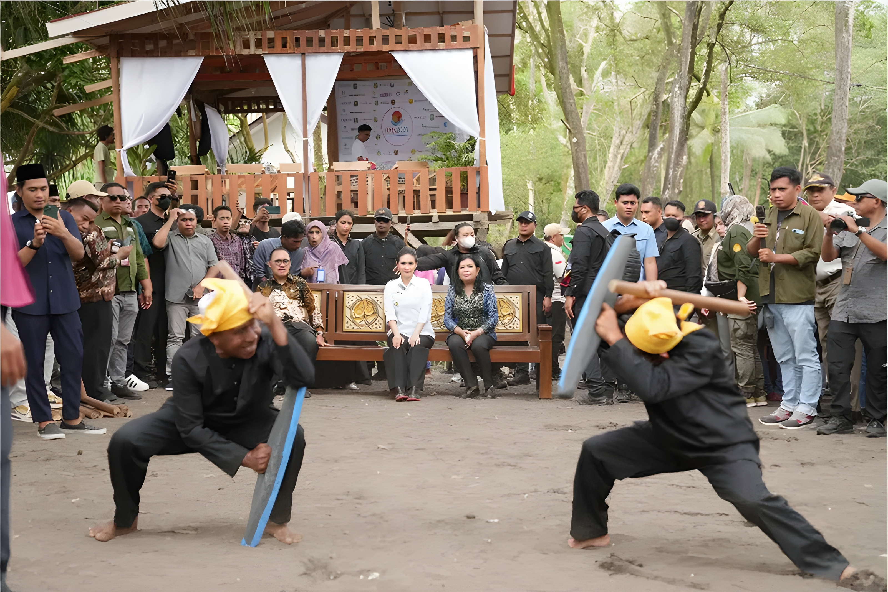

Mengenal kehidupan masyarakat, nilai-nilai budaya, dan warisan lokal yang menjadi bagian dari identitas wilayah Gamkonora.
Gamkonora tidak hanya dikenal melalui keindahan alamnya. Kehidupan masyarakat dan budaya lokal juga menjadi bagian penting dari identitas wilayah ini.
Masyarakat Gamkonora memiliki warisan tradisi yang diwariskan dari generasi ke generasi. Tradisi tersebut menjadi bagian dari identitas masyarakat sekaligus memperlihatkan nilai kebersamaan dan hubungan sosial.
Salah satu warisan budaya yang menjadi bagian dari identitas masyarakat Gamkonora.

Dudengo, yang juga ditulis Dodengo dalam beberapa sumber, merupakan tradisi seni budaya masyarakat Gamkonora yang dikenal sebagai pertunjukan tradisional satu lawan satu dan memiliki kemiripan dengan tarian perang.
Tradisi ini biasanya dilaksanakan setelah perayaan Hari Raya Idulfitri. Selain menjadi bagian dari warisan budaya, Dudengo juga memiliki makna sosial yang penting bagi masyarakat.
Salah satu nilai utama yang terkandung di dalamnya adalah mempererat tali silaturahmi dan persaudaraan antara masyarakat Desa Gamkonora, Talaga, Gamsungi, dan Tahafo.
Selain Dudengo, terdapat tradisi lain yang tercatat sebagai bagian dari warisan budaya masyarakat Gamkonora.
Handuri merupakan tradisi masyarakat yang berkaitan dengan bulan Ramadan. Tradisi ini dilaksanakan pada malam Lailatul Qadar dan sebagai bagian dari penutup bulan Ramadan.
Bara Masuwel, yang juga dikenal dengan sebutan Bambu Gila, tercatat sebagai salah satu warisan budaya Suku Gamkonora di Halmahera Barat.
Soya-soya Hia Gamkonora merupakan salah satu tradisi budaya yang tercatat dalam daftar warisan budaya Suku Gamkonora.
Ritual Religi Pele Kie Gamkonora juga tercatat sebagai bagian dari kekayaan tradisi masyarakat Gamkonora.
Mengenal kehidupan sosial dan identitas masyarakat yang tumbuh bersama warisan budaya daerahnya.
Masyarakat Gamkonora merupakan salah satu kelompok masyarakat asli yang menjadi bagian dari keberagaman budaya Halmahera Barat. Identitas tersebut tercermin melalui nama, bahasa, adat istiadat, dan tradisi yang terus dikenal oleh generasi penerus.
Hubungan antarmasyarakat dan antardesa menjadi bagian penting dalam kehidupan sosial. Hal ini terlihat melalui tradisi Dudengo yang mempererat silaturahmi, rasa saling menghormati, dan persaudaraan.
Bahasa daerah merupakan salah satu unsur penting dalam mempertahankan identitas masyarakat. Penggunaan bahasa dan pewarisan cerita budaya membantu generasi muda mengenal asal-usul serta warisan leluhurnya.
Pelestarian budaya membutuhkan keterlibatan masyarakat dan generasi muda. Mengenal tradisi, menghargai adat istiadat, serta menjaga lingkungan sekitar merupakan bagian dari upaya mempertahankan identitas daerah.
Mengenal budaya Gamkonora berarti mengenal sejarah, tradisi, dan kehidupan masyarakatnya. Warisan budaya akan terus memiliki arti ketika dipelajari, dihargai, dan diperkenalkan kepada generasi berikutnya.